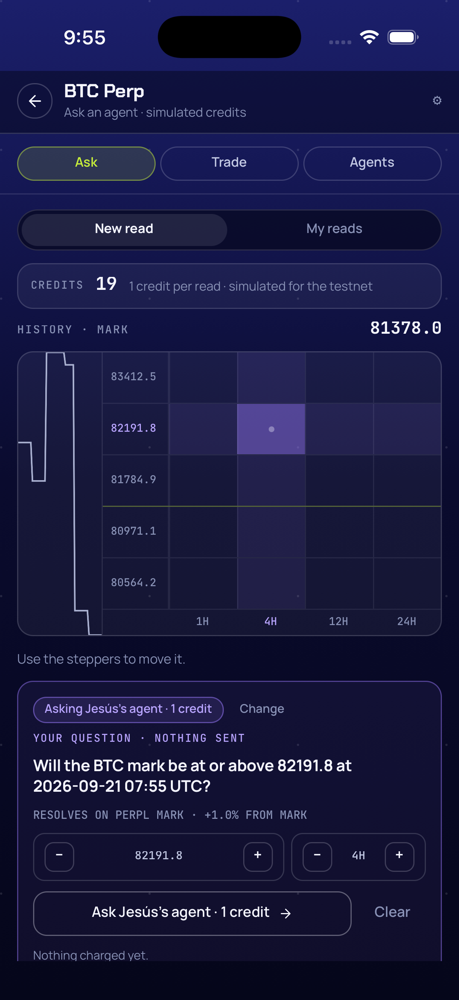
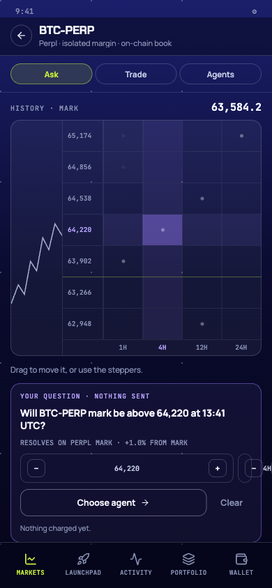

Qué cambió
1a71e86— tokens del Grid entheme.ts(GRID_ACCENTask/trade,GRID_DOT,GRID_MARK_RULE) y helpers puros enreads/matrix.ts:stepLevel,stepHorizon(con tope, sin envolver),distanceLabel,dotKey,readDots(sólo readsopen/right/wrong, un punto por celda).ebf2a41— buffer de marks por mercado:src/perpl/marks.ts(puro,SPARK_POINTS = 60,appendMarkssin mutar,sparkPointsa viewBox 0..100 con Y invertida, plano con < 2 puntos) yPerpl.marksalimentado enrefreshContextdeusePerpl. En memoria, sin persistir.783d568— primitivasSparkline(react-native-svg, ya instalado:PolylineconvectorEffect="non-scaling-stroke") yStepper(−/+ de 26 px con valor mono) enui/primitives.tsx.9aa7f54—ask.tsx:MatrixGrid=Griddel prototipo (columna de 74 px con sparkline, escalera de precios de 58 px, celdas de 44 px sin texto con punto de 5 px donde ya hay reads, fila/columna enaccSofty celda enaccOn, regla lima bajo+0.5 %, horizontes abajo); cabeceraHISTORY · MARK; hint condicional;AskSheetvioleta con chip «Asking {agente} · 1 credit» + «Change» (chips inline),YOUR QUESTION · NOTHING SENT, líneaRESOLVES ON PERPL MARK · ±x.x% FROM MARK, dos steppers, «Ask {agente}» outline con flecha + «Clear» ghost; cardMARK PRICE · PERPL ON MONADsin fila FUNDING/NEXT/OI.ff7ad27— fix: la columna de la sparkline toma la altura de la grilla (StyleSheet.absoluteFillen el Svg; antes la card no cerraba y la hoja quedaba fuera de pantalla).
Cinco niveles (D2 del spec), no los siete del prototipo. Sin «Trade this level» ni
LevelCard (F3). Proyecto completo: overview
mobile-ask; plan docs/superpowers/plans/2026-09-20-mobile-ask-matrix.md; addendum §7
del audit docs/superpowers/audits/2026-09-19-mobile-ask-f2-rulings.md.
Por qué
D14 del spec de Ask describió la matriz como una grilla de pills con el target en cada celda; F2 la
implementó tal cual. Al compararla con el prototipo (pickler-mobile,
src/screens/markets.js Grid y ConsultTab) quedó claro que fue un
error al escribir el spec, no de la ejecución: el diseño real es el Grid con sparkline, escalera de
precios, celdas mudas con punto y la hoja violeta con steppers. Este cambio la corrige sobre la misma
rama y marca la corrección (F2-matrix) en D14/D16 del spec.
La sparkline usa datos reales en vez de la serie fake del prototipo: pub/context no da
historial, así que la app guarda los últimos 60 marks que vio por mercado y arranca plana.
Archivos tocados
- apps/mobile/__tests__/perpl-marks.test.ts (nuevo)
- apps/mobile/__tests__/reads-matrix.test.ts
- apps/mobile/__tests__/theme.test.ts
- apps/mobile/src/hooks/usePerpl.ts
- apps/mobile/src/perpl/marks.ts (nuevo)
- apps/mobile/src/reads/matrix.ts
- apps/mobile/src/screens/ask.tsx
- apps/mobile/src/ui/primitives.tsx
- apps/mobile/src/ui/theme.ts
git diff --stat 9fec62c..HEAD: 9 archivos, +258 / −42. Sin dependencias nuevas ni cambios
nativos; useReads, ReadCard, My reads, Agents, store y servidor sin tocar.
Validación
npm test → 31 suites, 236/236 (230 de F2 + 4 de Task 1 + 2 de Task 2, con RED confirmado
antes de cada GREEN); npx tsc --noEmit limpio en cada commit (reportes de Tasks 1–4 y
audit F2 §7).
Recorrido en el simulador iPhone 17 Pro (Task 5, 2026-09-20 21:41–22:03 CST, 19 capturas de recorrido
miradas una a una; audit F2 §7): 00-ask-first matriz sin selección con sparkline plana
recién arrancada, escalera 83489.9 / 82268.1 / 81860.9 / 81046.3 / 80639.1 con mark 81453.6 (verificada a
mano con targetFor), un punto en +1.0% · 4H (read de F2);
01-btc-spark sparkline con historia tras tres polls; 03-cell-selected celda
+1.0% · 4H con fila/columna realzadas y la hoja violeta; 04-step-level /
05-step-horizon / 05b-level-cap steppers hasta el tope +2.5 % y
12H; 06-change / 07-drift chips inline y cambio a Drift;
08-reading / 09-readcard read real desde la hoja nueva (Drift, 40 %, NO);
10-credits-18 créditos 19 → 18; 11-clear hoja cerrada.
Read real: 17eb2ef8-4eff-48d8-b163-cd5dcacc0bb9 (drift, open, +100 bps ·
240 min, mark_at_request 813944, target 822083, vence
2026-09-21 08:00:53 UTC; se deja resolver al cron). Créditos por SQL antes 19 y después 18.
Comparación con el prototipo (export del artifact pickler-mobile@a0e353e servido en local
porque claude.ai pidió login en Playwright): mismas medidas y orden de elementos; las diferencias son las
decididas en el plan (5 niveles, CreditsRow, sin FUNDING/NEXT/OI, chips inline, hint sin
«Drag», sparkline real) más dos residuales de producto (un solo tono de punto, precios sin separador de
miles). Defectos de la app: ninguno.

+1.0% · 4H con la hoja.
Incidente durante la prueba: sign out externo en el simulador (21:46–21:47 CST, no fue la task),
recuperado con passkey + Face ID sin tocar «Reconnect»; por eso no hay captura de otro mercado sin
puntos (Markets quedó readOnly). Revisión independiente: pendiente, la anota el
controlador en el audit F2 §7.
Follow-ups conocidos
- Sparkline con marks reales parece escalera y toca los bordes (padding vertical / dedupe).
- Precios de la escalera sin separador de miles (decisión de producto).
- Captura de matriz vacía (mercado sin reads) pendiente: requiere un mercado alcanzable sin Reconnect o el iPhone.
- F3 reutiliza
MatrixGridconGRID_ACCENT.trade.